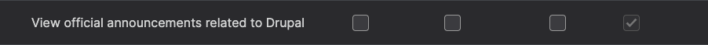
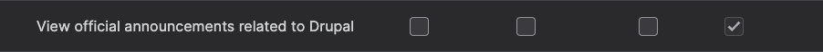

MR head (fe4adb4)
Checked + disabled, light mode
3.78:1Actual Drupal 12 lab rendering at /admin/people/permissions, 21×21 CSS px. MR head fe4adb4 vs proposed dark-mode fix. Images are enlarged 10× with nearest-neighbour scaling so individual pixels stay visible.
Scope: this page only reviews the disabled-checkmark fix. For the full before/after list, byte sizes and uncompressed source diffs, open the asset gallery.
Checked + disabled, light mode
3.78:1Checked + disabled, light mode
 3.78:1 — unchanged
3.78:1 — unchanged
Light mode is intentionally unchanged. The proposed dark-mode asset is not used here.
Checked + disabled, dark mode
2.85:1 — below 3:1Checked + disabled, dark mode
 5.85:1
5.85:1
Administrator permission row, dark mode. The disabled checked column is the rightmost checkbox.


Actual Drupal rendering with Chromium forced-colours emulation
Native checkbox appearance retained; no regression from the proposed rule
appearance: auto under forced colours. The proposed dark-mode background image is not used; the native checked state is drawn by the browser.Actual Drupal rendering with Chromium forced-colours emulation

Native checkbox appearance retained; no regression from the proposed rule
| State | Background | Check | Contrast |
|---|---|---|---|
| MR head, light | rgb(234,234,234) | #767676 | 3.78:1 |
| MR head, dark | rgb(49,49,52) | #767676 | 2.85:1 |
| Proposed, light | rgb(234,234,234) | #767676 | 3.78:1 |
| Proposed, dark | rgb(49,49,52) | #adaeb3 | 5.85:1 |
Disabled controls are exempt from WCAG 2.2 SC 1.4.11. This is a measurable state-visibility regression and a low-risk improvement, not a WCAG-failure claim.